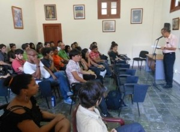

Oficialmente nombrado Centro de Formación Literaria, la institución no es una escuelita de narradores, sino un espacio para cultivar el talento, aclara su fundador y director, el escritor y pedagogo Eduardo Heras León…
Von: Camilo García Lopez-trigo.
Samstag, 11 Am Morgen. Esquina de 5ta. und 20, en Miramar. A pesar de la hora y el día, rompiendo la soledad del reparto residencial, la esquina tiene una concurrencia poco usual. Varias decenas de jóvenes —y unos pocos que ya peinan canas— alborotan los alrededores de la vieja casona y el separador de la 5ta. Avenida: es la inauguración del nuevo Curso de Técnicas Narrativas del Centro Onelio. A la treintena de muchachos y muchachas de nuevo ingreso, se les unen los ya graduados del curso recién terminado, porque también se entregan el Premio César Galeano y las Becas de Creación El Caballo de Coral.
Oficialmente nombrado Centro de Formación Literaria “Onelio Jorge Cardoso”, la institución no se trata de una escuelita de narradores, aclara su fundador y director, el escritor y pedagogo Eduardo Heras León: “Aquí se cultiva el talento y lo abonamos con el estudio de las técnicas, para hacerlo crecer y fructificar”.

El también Vicepresidente de la Asociación de Escritores de la UNEAC, en sus palabras de bienvenida a los nuevos estudiantes, explicó que el curso les ofrecería “las herramientas del oficio, ayudarlos a emplearlas en la práctica y desarrollar su espíritu crítico y autocrítico al máximo” y los declaró parte de una cofradía de iniciados.
Con la convocatoria actual, el Centro Onelio lleva 16 cursos consecutivos —sobre bases anuales— por el que ya han pasado más de 800 estudiantes: jóvenes de hasta 35 años de diversos campos profesionales y de todos los rincones del país, muchos de los cuales se han convertido con el tiempo en conocidos y laureados narradores.
La gran acogida que ha tenido el curso de este año ha roto todos los récords. De los 165 aspirantes —cifra sin precedentes en los 15 años anteriores— fueron escogidos 55 alumnos —35 de La Habana y 20 del interior del país—, la más alta matrícula de todos los cursos, en la que la presencia femenina por primera vez supera a la masculina.

Trabajar en algo que amas Junto a Heras, en la puerta de la casona, Ivonne Galeano recibe a los estudiantes y les da la bienvenida. Ella es coordinadora del curso y también fundadora del Centro. Alguien asegura que es como una madre para quienes han estudiado allí: con su amplia sonrisa y su inagotable buen humor les acoge como en casa exigiéndoles puntualidad, atenta a cada detalle y velando por que todo salga como está previsto.
También les acompaña Raúl Aguiar, quien se graduó alguna vez de geógrafo, devino talentoso escritor de forma autodidacta y tuvo el privilegio de formar parte del primer curso organizado allí en 1998. Tiempo después fue invitado por el propio Heras a dar clases, hasta convertirse en parte del claustro habitual de profesores y uno de sus más laboriosos defensores.
“Este es el mejor trabajo que he podido encontrar jamás”, confiesa, “trabajar en algo que amas es lo que yo le sugeriría a todo el mundo, porque no te cansa, porque siempre estás aprendiendo algo nuevo, retroalimentándote”. Está firmemente convencido de que los jóvenes tienen cosas nuevas que decir, “además de conocer muy buenos amigos todos los años, se escuchan propuestas nuevas, formas diferentes de ver el mundo”.
El curso está organizado para que sus estudiantes empiecen con una unidad básica de redacción, donde se repasa la armonía en el lenguaje, cómo evitar las cacofonías, lugares comunes y frases hechas, qué es la metáfora, los adjetivos, la puntuación, el uso de los gerundios, composición básica.
Esto sirve de base para la batería de conocimientos importantes que vienen después: composición en la escritura, descripción, diálogos, personajes, argumentos. Y finalmente el núcleo principal: el cuento, la novela, estudio sobre el estilo de determinados escritores, técnicas narrativas específicas —como caja china y vasos comunicantes, monólogo interior, el mini cuento.
“Todos participamos activamente en la impartición de materias”, explica Raúl. “Pero el más recargado es Eduardo Heras”, ratifica con admiración, “hay que ver cómo cambiamos eso en el futuro, para que tenga menos carga de trabajo”.
Como resultado de tanto esfuerzo, llama la atención que en los últimos años, prácticamente en todos los concursos literarios del país, han sido galardonados los egresados del curso del Centro. Eso es motivo de orgullo para sus profesores pues, según Raúl, “es como un pequeño triunfo para nosotros, hay un pequeño granito que hemos puesto y eso me pone contento”.
Talento y oficio
Dicen que la casona de 5ta. und 20 está habitada por un fantasma que, según testigos, hasta suena sus cadenas en la quietud de la noche. Sin embargo, aseguran también que incluso este polizonte en el extraordinario viaje de la narrativa se ha puesto a tono con la atmósfera “fraterna, mágica e inolvidable” que reina en este ambiente de creación literaria.
El Centro cuenta con una biblioteca especializada, una videoteca, una sala de computación y la Editorial Cajachina, donde se trabajan los libros que publican y la revista El Cuentero. Außerdem, de conjunto con el Centro Provincial del Libro y la Literatura de Sancti Spíritus y el Instituto Cubano del Libro, convocan al Concurso Internacional de mini cuentos El Dinosaurio, para aquellos textos que no excedan las veinte líneas.
No ha sido fácil mantener todo este esfuerzo durante tantos años, sobre todo ante las inevitables carencias materiales. Varios retos le deparan en el futuro, sobre todo con las dificultades de impresión y reproducción de materiales útiles para el curso, el necesario empeño por mantener estudiantes de otras provincias, la urgencia de fondos para el financiamiento de los premios que otorgan —que son de cardinal importancia para los nuevos escritores—, el mantenimiento de la vieja casa.
No obstante, todos estos desvelos valen la pena porque, de acuerdo a las palabras de Heras, “cada nuevo curso es un desafío para todos nosotros y simultáneamente un estímulo renovado”. Así lo amerita haberse convertido en un centro de referencia sobre la narrativa cubana más actual.
Según Francisco López (Sacha), también fundador del Centro, no se debe olvidar que existen 168 centros universitarios en el país y ninguno forma escritores. Para él, lo más importante es que esta institución cultural y educativa “ha descubierto la capacidad de dar herramientas para que cada estudiante se desarrolle como debe en su destino. El conocimiento que van a recibir se va a adecuar a ese duende que cada uno lleva dentro, al que no podemos renunciar”.
Heras lo definía de otra forma: “Se necesita talento y oficio. Talento tienen, acabamos de comprobarlo en sus textos; el oficio van a adquirirlo en nuestras aulas”.
Incluso para aquellos que no llegan “al sueño de todos” —que es convertirse en escritores— estos cursos serán “como un punto de partida para superiores empeños en el terreno de la literatura; como asesores, promotores o, simplemente, mejores lectores… porque este curso les va a ofrecer una nueva dimensión de la lectura”, dijo, y ese resultado merece sobreponerse a todas las dificultades.
El futuro tiene la palabra
Una peculiar tradición ante cada nuevo curso es que un estudiante del grupo anterior sea el responsable de dar la bienvenida y transmitir sus impresiones a los iniciados. Sin dudas, esta práctica también ayuda a conservar ese ambiente desenfadado y familiar que se siente en la casa. El chino Heras, como le llaman sus amigos, fue preciso en sus palabras: “Lo que deseamos es que, además de escritores, cuando terminen este curso se sientan y sean mejores seres humanos”.
En esta ocasión le correspondió la bienvenida a Alejandro Barrios, estudiante de la Facultad de Lenguas Extranjeras de la Universidad de La Habana, para quien el Centro Onelio es “un lugar de encuentro”: “Hicimos una fuerte amistad entre todos. No hay distinción entre profesores y alumnos”.
En sus palabras se reflejó el valor del curso para aprender “los primeros pasos del largo camino que tiene que transitar un escritor que de veras quiere pulirse, con filosofía propia, subversiva, que rompa con lo viejo, que trate de ser siempre novedosa”. Y aprendió que “si de veras existe la libertad, es en la creación artística. No se puede escribir con miedo, al menos no desde la sinceridad”.
Agradeció estos primeros pasos como una “salvación” y valoró altamente la posibilidad de compartir con “los maestros más sobresalientes de la historia de la literatura”, pues le sirvió para darse cuenta “que no estamos tan lejos de aquellos autores que más admiramos, que fueron o son, seres humanos con todas las virtudes e imperfecciones que encierra esta especie.”
Por si fuera poco, deseó que el curso tuviera al menos una prueba final, “para haber tenido la justificación de suspender, repetir y empezar otra vez junto a ustedes”. Fue el mismo sentimiento de Aracelia Avilés, otra recién graduada de Camagüey, quien confesó sentir envidia de los nuevos ingresos: “no cambio mi grupo, pero me encantaría regresar al minuto en que todo lo bueno estaba por venir”.
No caben dudas que esta nueva cofradía de iniciados reinicia el ciclo de jóvenes talentos que seguirán teniendo motivos para agradecerle al Centro Onelio la posibilidad de abrirles un nuevo camino en la literatura. Y de sus pupitres saldrán voces que darán que hablar en la narrativa cubana.
Como lo definiera Heras León: “En la diaria lucha por convertirnos en escritores, sólo el tiempo decidirá quiénes serán los elegidos. El futuro tiene la palabra”.